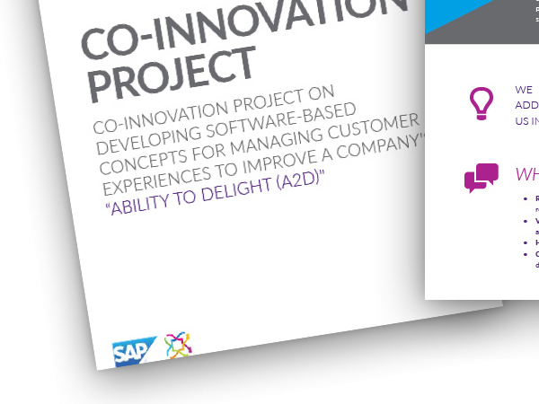
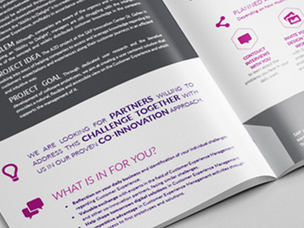
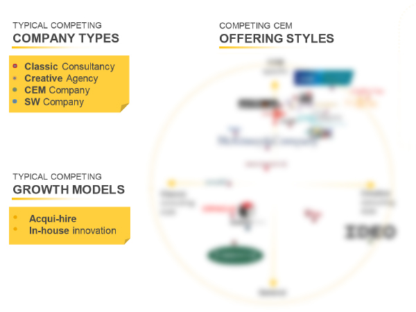
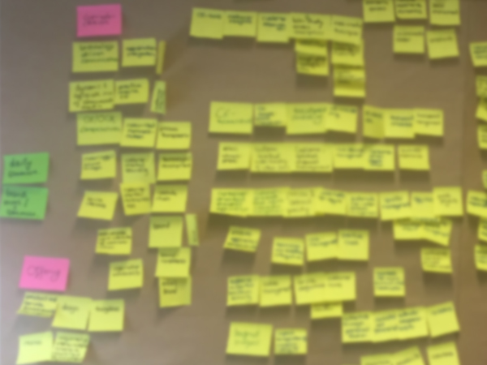
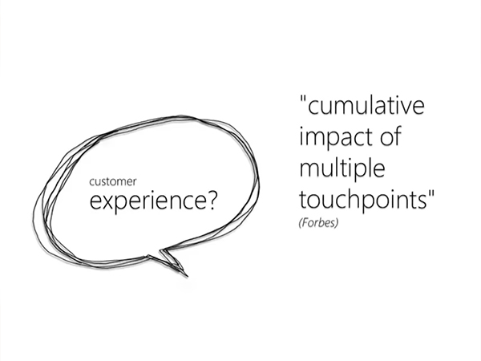
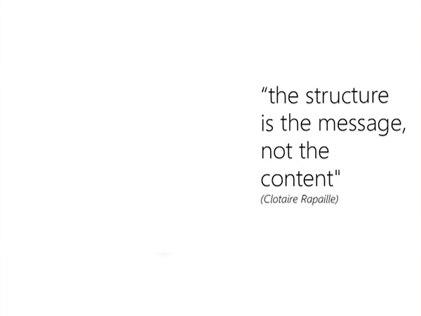
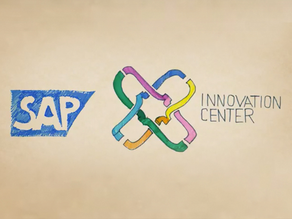

Client: SAP Research & Innovation Hub, St. Gallen, Switzerland | 2015–2016
Role: CX Management Researcher & Workshop Designer (Intern)
How might we help enterprise managers define, measure, and influence customer experience in complex organisational environments?
At SAP’s Research & Innovation Hub, the Ability-to-Delight (A2D) team set out to explore this open question. The challenge was to identify what “customer experience” really meant in large B2B contexts, and how it could be understood and shaped strategically. The aim was not only to support decision-makers with models and tools but also to lay the foundation for future integration into SAP’s software products.
Joining the A2D team as a researcher and designer, I contributed to an exploratory journey toward defining measurable experience indicators. We conducted cross-industry research to uncover how companies perceived, managed, and evaluated customer experience. Based on this, we co-developed a new experience model — a framework that helped responsible managers translate abstract CX goals into tangible, trackable dimensions.
The model wasn’t a predefined task — it was a result of research-driven problem framing. It emerged through iterative sense-making, mapping complex interdependencies between user expectations, business processes, and organisational structure.
Led industry research & scenario scanning
Explored CRM/CXM trends and future-oriented challenges across enterprise sectors — translated insights into strategic diagrams and presentation materials, co-presented to senior executives and innovation leaders across SAP.
Initiated and facilitated internal Design Thinking workshops
Proactively launched participatory sessions to foster cross-functional collaboration and strengthen design capabilities within the research hub — promoting shared knowledge, team alignment, and a human-centred mindset across projects.
Designed participatory CX workshop formats
Created the concept, structure, and visual design of strategic workshops aimed at testing the CX model and supporting co-creation with internal stakeholders — enabling teams to explore definitions, needs, and practical use-cases around customer experience.
Co-developed an applied CX model
The model enabled users to test how changing specific experience factors would impact the overall journey — revealing cause-effect links and supporting better decisions.
Delivered foundational research and cx model intended for implementation in SAP’s CXM and CRM toolsets.
Enabled teams to simulate customer journey changes and understand and prioritise experience factors
Supported strategic co-creation workshops for ongoing CX-related research and b2b business development and decision-making
Fostered stronger design awareness and cross-functional collaboration inside the research hub
This project marked a pivotal point in my early experience design career — where I learned how to make complex, intangible experiences visible and actionable. Collaborating with business researchers and innovation strategists taught me how to ground both design and research work in data, co-create with cross-functional teams, and align with the expectations of a large-scale corporate R&D environment.
As a final reflection, I created a short creative video summarising my internship experience.
Human-Centered Design
Industry Research, Competitor Analysis, Benchmarking
B2B User Research and Participatory Design, Co-Innovation
Opportunity Mapping, Scenario Mapping
Stakeholder & Action Mapping
Workshop Design, Facilitation
Prototyping
Design Thinking Practices
Visual Design







This project marked a pivotal point in my early experience design career — where I learned how to make complex, intangible experiences visible and actionable. Collaborating with business researchers and innovation strategists taught me how to ground both design and research work in data, co-create with cross-functional teams, and align with the expectations of a large-scale corporate R&D environment.
As a final reflection, I created a short creative video summarising my internship experience.
info@mirajoo.com